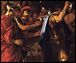
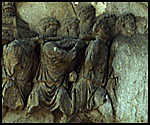

The Minneapolis Institute of Arts
Main Menu ~ Quiz Introduction
Quiz for Kids and Parents: Bonus Answer
 (c)  (c)
The image on the right is a detail of The Arch of Titus from ancient Rome.
Answer: The armor, short dresses, and headgear are copied from Roman art. Poussin lived most of his adult life in Rome and copied the costumes from the classical sculptures and paintings he saw there.